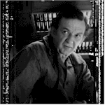

Contents | Features | Reviews | News | Archives | Store |
 |
|
| Movie Credits | Buy It! |
Cube
Review by Sean Axmaker
Posted 13 November 1998
| Directed by Vincenzo Natali Starring
Maurice Dean Wint, Nicole de Boer, Written by Andre Bijelic, Graeme Manson |
Six strangers wake up in what appears to be an interlocking set of huge, hollowed out Rubik’s cubes. They don’t know how they got there or why they’ve been chosen but they want out. I don’t blame them. Ten minutes into this film and I wanted out too. Director Vincenzo Natali and co-screenwriters Andre Bijelic and Graeme Manson have designed a live action puzzle come morality tale, along the lines of a Rod Serling scripted "Twilight Zone" episode. But they’ve forgotten that the key to Serling’s dramas isn’t found in the situation or the plot -- no matter how ingenious -- but the characters-imbedded ironies. Serling made you care for his characters, identify with them, feel their pain. Natali and friends have populated their antiseptic world with characters displaying all the dimension of a video game figure. Who cares if they die? It’s just another blip gone from the screen.
The pre-credits scene promises something fun, if not exactly unique. A gangly bald man in military-like olive drab fatigues steps into a faintly glowing room, about 14 feet cubed, walls and ceiling exactly alike. The door is found halfway up the wall. He gingerly steps onto the floor and across to the other door when a slight crack of a sound freezes him in his tracks, followed by a deafening whoosh. Suddenly blood rises from his skin in the pattern of a grill and slowly, slurpily he begins to fall apart -- literally. He’s been sliced and diced like a french fry. He’s been (dare I say it?) cubed.
The plot is simple: the six characters got to think their way through this booby-trapped contraption before they die of thirst. As they take stock of their situation they realize they’ve been chosen according to their attributes: on of them is a doctor, one a cop, one an escape artist, one a math whiz, and so on. Each room is marked by a set of numbers, and those sets of numbers are the key to everything in this monumental puzzle. They’ve got the intellectual tools to solve the puzzle and steer clear of the booby traps, but like a sadistic prank played by a malevolent God in his imperfect minions, personality conflicts and power games sow the seeds of their own defeat from within.
We might actually care if there were a couple of characters in the bunch but they come off as little more than types. The math whiz (Nicole de Boer), for instance, begins as a hysteric paralyzed by fear and for no discernible reason turns into a pissy, pampered college girl ("Hello! Are we ready yet?!), but never suggests she has any kind of a life or a personality outside of her role in the group. The rest of the characters play their parts with such histrionics it plays more like a spoof: hushed tones followed by furtive glances around, angry outbursts that escalate into pitched shouting matches in seconds flat, and every ellipsis on the screenplay turned into a mysterious pause. It feels like amateur night at the community center.
Natali, a former storyboard artist, has designed CUBE to deliver the most for his production dollars. For all intents and purposes the entire film takes place in one mildly claustrophobic set, a completely enclosed room measuring about 15 feet in each direction with a single door in the center of each surface. Change the color and voila, a new room. Natali put everything into that one set and it’s a quite striking, with alien looking etchings over each of the eight squares that surround the center door, itself a neat little pneumatic device that opens with an expectant rush of air. Unfortunately his brilliant budgetary talents are unmatched by any dramatic elements. He gets so caught up in the puzzle he forgets to turn his plot into a story. This high concept science fiction film hasn’t been directed so much as designed and plotted, and with no characters to follow and a puzzle so complicated it takes a rocket scientist to figure it, there’s simply nothing left to hold any interest. Best stay home and play the computer game version.
Contents | Features | Reviews | News | Archives | Store
Copyright © 1999 by Nitrate Productions, Inc. All Rights Reserved.